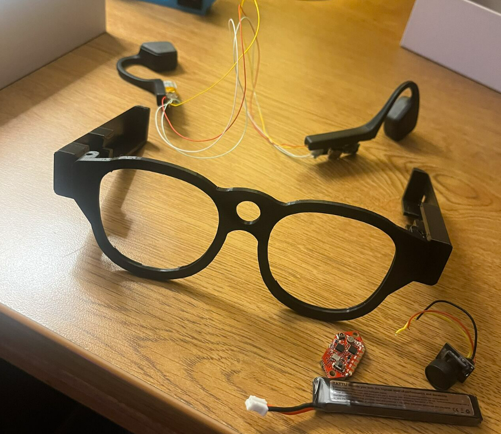
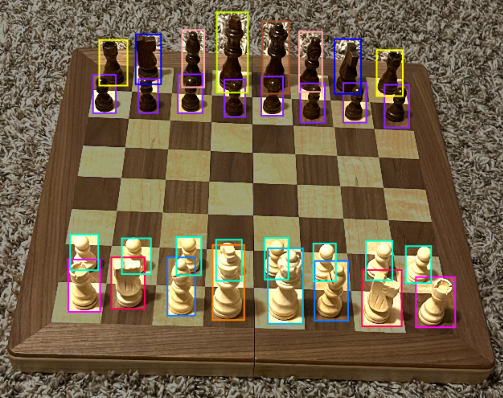
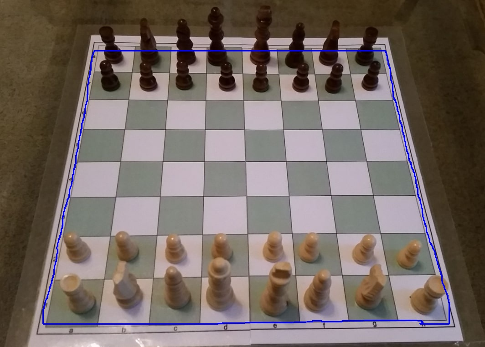

The system is made of three essential components:
The Glasses, the Computer, and the Cloud.
The glasses hold the camera module, the Radio Transmitter, the bone conducting headphones, and the batteries that power everything.
The Zeus Radio transmitter takes the UART video from the camera and wirelessly transmits it to the computer.
The bone-conducting headphones are essential for ensuring only the wearer can hear the chess moves relayed to them, while still resembling the glasses shape


Once the computer receives the video stream, it captures a frame and sends it to my Roboflow CV Models. My first CV model identifies and labeles every chess piece visibible. Using 7000+ labeled chess datasets and over 500 labeled images by me, the computer vision model has a 98% precision and recall evalutation.
The second model uses segmentation to identify the outline of the chess board, since the board could be viewed from various different angles and perspectives.
Once the pieces have been identified, their position on the chess board needs to calculated. If I could identify where the corners of the chess board were, I could take the quadralateral and divide it into an 8x8 grid and identify which cell each piece was in.
To find the corners, I performed a Hough Transform. on the data points that outline the board. This involves taking every pair of neighboring points on the edge and calculating the line they form. This line can be represented as y = mx + b, but I chose to represent the lines as:
r = xcos(θ) + ysin(θ)
This avoids errors that involve infinity if the slope of the line is ever verticle.
Using the Hough Transform, the r and θ of each pair are mapped onto a graph. Since each side of the board will all have the same r and θ, this graph generates four clusters of points that represent the boarders of the chess board. The intersection of these four lines are calculated which then identifies the four corners of the board.
Now, with their positions identified, the configuration of the chess board is found. Using the Stockfish Python Library, the best chess move is identified. A text-to-speech message of the best chess move is generated and sent to the headphones via bluetooth
